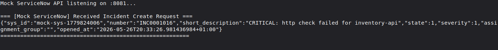
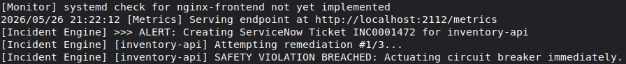
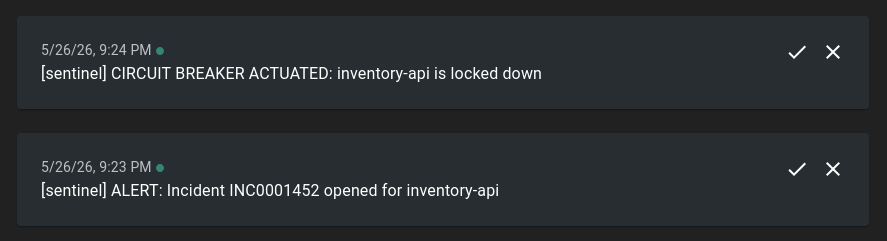
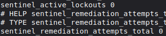

Designing Closed-Loop Operational Automation and Safety Boundaries for Enterprise SRE Environments
Problem
In production environments, automation is a double-edged sword. Traditional infrastructure scripts - such as simple cron jobs, event-driven webhook runners, or basic alert handlers - typically operate as open-loop systems. They detect a failure condition, fire a remediation command (e.g., restarting a service or clearing a disk space threshold), and immediately exit.
[Open-Loop Lifecycle] Alerts Engine --> Triggers Script --> Executes Bash Command --> [Blind Termination]
This open-loop design introduces critical architectural hazards:
- False Recovery Assertions: The automation assumes success if the underlying shell command exits with status 0. It does not confirm that the application layer is actually healthy and serving traffic over the network.
- The Cascading Failure Vector: If an application is failing due to a poisoned database connection pool or misconfigured upstream dependencies, repeatedly forcing restarts can overload downstream networks, corrupt local filesystems, or mask the root cause of an outage.
sentinel was designed to answer a fundamental operational question: How can automated remediation safely interact with production infrastructure without introducing cascading system failures?
Closed-Loop Operational Lifecycle
To prevent automated scripts from blinding themselves to runtime realities, sentinel utilizes a strict closed-loop feedback system. A remediation event is treated not as a one-shot execution, but as a multi-stage lifecycle that locks the tracking state until the system returns to a deterministic baseline.
+-------------------------------------------------+
| |
v |
[Active Monitoring] ---> [Failure Detected] | (If Unhealthy,
^ | | Increment Retries)
| v |
| [Open ITSM Ticket] |
| | |
| v |
| [Execute Remediation] |
| | |
| v |
| [Stabilization Pause] |
| | |
| v |
+----------- [Post-Remediation Verification] -----+
|
| (If Verified Healthy)
v
[Resolve ITSM Ticket]
Closed-Loop Pipeline Steps
- Detection: Continuous active probing identifies a target degradation or outage.
- ITSM Synchronization: Before any remediation executes, a persistent tracking context is initialized by dispatching a structured incident registration request to an upstream IT Service Management (ITSM) layer or ticketing gateway.
- Execution: The constrained remediation action runs under strict boundaries.
- Stabilization Window: The system enforces a mandatory, configuration-driven time hold to allow processes to complete initialization, clear memory pools, or bind to local network sockets.
- Post-Remediation Verification: Rather than trusting the subshell exit code, the platform executes a dedicated secondary health check directly against the application layer. If this active verification passes, the incident ticket is automatically resolved. If it fails, the system transitions to a defensive failure mode rather than retrying blindly.

Safety Model and Blast Radius Mitigation
Allowing a background management daemon to execute commands with elevated host privileges introduces extreme operational risk. A minor template misconfiguration, an empty variable interpolation, or a compromised configuration block can easily lead to unintended data loss or platform-wide disruption.
sentinel mitigates this blast radius by implementing two decoupled, pre-flight safety boundaries directly inside the execution engine.
[Lexical Command Parser]
|
(Matches Dangerous Token?)
/ \
YES NO
/ \
v v
[CRITICAL_SAFETY_VIOLATION] [Initialize Kernel Timeout]
- Abort Shell Execution |
- Trip Circuit Breaker [Execute Subprocess]
- Append Append-Only Audit Log |
(Exceeds 5-Second Threshold?)
/ \
YES NO
/ \
v v
[SIGKILL Emitted] [Normal Post-Check]
Lexical Pre-Flight Scanning vs. Raw Shell Evaluation
Before a string ever hits the operating system's command interpreter, it is intercepted by a lexical compliance engine. The engine tokenizes the planned instruction and evaluates it against an explicit blocklist of destructive command primitives (e.g., structural file removals, disk formatting utilities, raw block-device manipulation tools).
If a safety violation is flagged:
- The command is aborted before fork execution occurs.
- A CRITICAL_SAFETY_VIOLATION event is instantly written to an append-only audit log.
- The system opens its internal circuit breaker, entirely blocking all automated actions across the host until an operator manually intervenes.
Bounded Execution Contexts
Any approved script execution is wrapped inside a kernel-level bounded execution context. The runtime enforces an absolute execution threshold (configured to a strict 5-second maximum).
If a remediation script hangs due to a locked file descriptor, an unreachable network route, or an unexpected prompt for user input, the host environment issues a definitive termination signal to the process group. This constraint prevents worker threads from blocking indefinitely and guarantees that automation tools cannot cause local resource exhaustion or process starvation.

Failure Modes and Bounded State Management
When automation systems fail, they often do so due to a complete loss of execution context. If a management daemon lacks persistent memory of its historical attempts, a simple system reboot, host supervisor cycle, or container crash will reset its trial counters to zero. This leads directly to retry-storming upon daemon initialization.
[The Danger of State Erasure / Retry Storms] Daemon Crash ---> Memory Reset (Retries = 0) ---> Daemon Starts ---> Re-executes Failing Script Loop
Trade-Off: Local SQLite vs. Enterprise Distributed Data Stores
To eliminate retry storms, the system must retain its execution counters permanently across daemon restarts.
- The Design Decision: For this architecture, SQLite was selected due to its ultra-low operational overhead, zero-dependency deployment profile, and deterministic embedded state management. It provides ACID-compliant transactions directly on local disk, ensuring that if the host suffers a sudden hard power loss, the historical tally of failed remediation attempts is accurately preserved.
- The Enterprise Trade-off: In a distributed, multi-node enterprise environment, relying on a localized single-file database limits horizontal scalability and creates a single point of failure per node. In a large production scale-out, this role would be delegated to a central PostgreSQL instance, a highly-available cloud-native key-value store, or integrated directly into an existing CMDB/ITSM persistence layer to synchronize operational history across multiple automation cluster heads.
Circuit Breaker Mechanism
Through this persistent tracking layer, every service profile enforces a maximum retry threshold. If the post-remediation verification check continues to fail and the threshold is reached, the circuit breaker trips into an open state (isLockedOut = true).
Once open, the system switches from automated remediation mode to escalation and lockdown mode:
- All automated execution loops for that resource are explicitly isolated and blocked.
- High-priority notifications are emitted instantly to out-of-band communication streams (e.g., instant push notifications via webhook notification integrations).
- The tracking state remains securely locked until a human engineer addresses the underlying fault and transmits a manual clear signal to the daemon.

Observability and Infrastructure Telemetry
An automation platform acting silently in the background is impossible to maintain safely. To maintain high operational trust, the internal mechanics of the remediation engine must be completely transparent to existing engineering stacks. Sentinel structures its telemetry through a dual-engine observability model, segregating macro health performance from micro trace execution.
+------------------------------------------+
| Sentinel Orchestration Engine |
+------------------------------------------+
/ \
/ \
v v
[Macro Metrics: Pull Model] [Micro Tracing: Structured Context]
| |
Prometheus Scraping Layer OpenTelemetry Core SDK
| |
- Total Remediation Gauges - Injected Context Attributes
- Lockout Counter Progress (Service Target, Health State)
| |
v v
[Grafana Dashboard View] [Zipkin / Jaeger Timeline View]
Macro Metrics via Pull Architecture
The daemon exposes an isolated metrics server hosting a dedicated metrics collection endpoint. This design allows standard enterprise collection daemons (like Prometheus) to scrape real-time system performance data continuously without causing log file bloating.
Rather than printing arbitrary tracking text strings, metrics are tracked via explicit metrics types:
- Counters: Tracking absolute occurrences of remediation actions and tripped circuit breakers over time.
- Gauges: Displaying the immediate, real-time count of currently locked-out services on the host machine.
Micro Tracing via Structured Context
For deep dive post-mortem investigation, every incident lifecycle execution is instrumented through the OpenTelemetry standard. When an anomaly is captured, a distinct tracing span is instantiated.
Crucially, instead of writing freeform text log entries, runtime attributes are injected directly into the span context as immutable metadata pairs (such as exact target hostname, service identifier, and network health verification boolean returns). This structural layout allows operators to pipeline telemetry streams cleanly into distributed tracing systems like Jaeger or Zipkin, mapping the entire operational event timeline from the initial network failure detection down to the subshell termination signal.

Summary Matrix
The table below provides a summary of the core architectural design shifts embedded inside sentinel compared to legacy platforms scripting methods:
| Operational Dimension | Traditional Infrastructure Scripting | Sentinel Platform Architecture |
|---|---|---|
| Verification | Fire-and-forget subshell launch. Assumes success on exit code 0. | Closed-Loop Recheck: Validates state actively after a 2s stabilization pause. |
| State Memory | Volatile or stateless. Blind to consecutive execution histories. | SQLite Persistence: Guarantees state tracking survives hard daemon restarts. |
| Blast Radius Control | Blind command injection; raw string evaluation without checks. | Lexical Parser and Circuit Breaker: Immediate lockouts on compliance breaches. |
| Process Security | Infinite run limits; script deadlocks stall thread executors. | Bounded Contexts: Explicit 5-second kernel execution timeouts. |
| Telemetry | Ad-hoc raw string prints to local server files. | Dual-Engine Observability: Prometheus pulling + structured OpenTelemetry traces. |
See repo here.